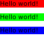
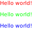
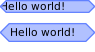

Module: awful.widget.prompt
The widget version of awful.prompt.

local myprompt = awful.widget.prompt { prompt = 'Execute: ' } myprompt:run()
Class Hierarchy
- gears.object
-
- wibox.widget.base
-
- wibox.container.background
-
- awful.widget.prompt
Info:
- Copyright: 2009 Julien Danjou,2018 Aire-One
- Author: Julien Danjou <julien@danjou.info>
Constructors
| awful.widget.prompt {[args]} | Create a prompt widget which will launch a command. | |
Object properties
| with_shell | boolean | Always spawn using a shell. | |
| widget | widget | The widget displayed in the background widget. | Inherited from wibox.container.background |
| bg | color | The background color/pattern/gradient to use. | Inherited from wibox.container.background |
| fg | color | The foreground (text) color/pattern/gradient to use. | Inherited from wibox.container.background |
| shape | gears.shape or function | The background shape. | Inherited from wibox.container.background |
| border_width | number | Add a border of a specific width. | Inherited from wibox.container.background |
| border_color | color | Set the color for the border. | Inherited from wibox.container.background |
| border_strategy | string | How the border width affects the contained widget. | Inherited from wibox.container.background |
| bgimage | string or surface or function | The background image to use. | Inherited from wibox.container.background |
| children | table | Get or set the children elements. | Inherited from wibox.widget.base |
| all_children | table | Get all direct and indirect children widgets. | Inherited from wibox.widget.base |
| forced_height | number or nil | Force a widget height. | Inherited from wibox.widget.base |
| forced_width | number or nil | Force a widget width. | Inherited from wibox.widget.base |
| opacity | number | The widget opacity (transparency). | Inherited from wibox.widget.base |
| visible | boolean | The widget visibility. | Inherited from wibox.widget.base |
| buttons | table | The widget buttons. | Inherited from wibox.widget.base |
Theme variables
| beautiful.prompt_fg | color | The prompt foreground color. | |
| beautiful.prompt_bg | color | The prompt background color. | |
Deprecated object properties
| shape_border_width | number | When a shape is set, also draw a border. |
Inherited from wibox.container.background |
| shape_border_color | color | When a shape is set, also draw a border. |
Inherited from wibox.container.background |
Object methods
| :set_shape (shape) | Set the background shape. | Inherited from wibox.container.background |
| :add_button (button) | Add a new awful.button to this widget. | Inherited from wibox.widget.base |
| :emit_signal_recursive (signal_name, ...) | Emit a signal and ensure all parent widgets in the hierarchies also forward the signal. | Inherited from wibox.widget.base |
| :index (widget[, recursive[, ...]]) -> (number, widget, table) | Get the index of a widget. | Inherited from wibox.widget.base |
| :connect_signal (name, func) | Connect to a signal. | Inherited from gears.object |
| :weak_connect_signal (name, func) | Connect to a signal weakly. | Inherited from gears.object |
| :disconnect_signal (name, func) | Disonnect from a signal. | Inherited from gears.object |
| :emit_signal (name, ...) | Emit a signal. | Inherited from gears.object |
Signals
| widget::layout_changed | When the layout (size) change. | Inherited from wibox.widget.base |
| widget::redraw_needed | When the widget content changed. | Inherited from wibox.widget.base |
| button::press | When a mouse button is pressed over the widget. | Inherited from wibox.widget.base |
| button::release | When a mouse button is released over the widget. | Inherited from wibox.widget.base |
| mouse::enter | When the mouse enter a widget. | Inherited from wibox.widget.base |
| mouse::leave | When the mouse leave a widget. | Inherited from wibox.widget.base |
Constructors
- awful.widget.prompt {[args]}
-
Create a prompt widget which will launch a command.
For additional documentation about
argsparameter, please refer to awful.prompt and awful.prompt.run.Parameters:
- args Prompt arguments.
- prompt string Prompt text. (default "Run: ")
- bg color Prompt background color. (default `beautiful.prompt_bg` or `beautiful.bg_normal`)
- fg color Prompt foreground color. (default `beautiful.prompt_fg` or `beautiful.fg_normal`)
- fg_cursor gears.color (optional)
- bg_cursor gears.color (optional)
- ul_cursor gears.color (optional)
- font string (optional)
- autoexec boolean (optional)
- highlighter function A function to add syntax highlighting to the command. (optional)
- exe_callback function The callback function to call with command as argument when finished. (optional)
- with_shell boolean Use a (terminal) shell to execute this. (default false)
- completion_callback function The callback function to call to get completion. See awful.prompt.run for details. (default `awful.completion.shell`)
- history_path string File path where the history should be saved. (default `gears.filesystem.get_cache_dir() .. '/history'`)
- history_max integer Set the maximum entries in history file. (default 50)
- done_callback function The callback function to always call without arguments, regardless of whether the prompt was cancelled. See awful.prompt.run for details. (optional)
- changed_callback function The callback function to call with command as argument when a command was changed. (optional)
- keypressed_callback function The callback function to call with mod table, key and command as arguments when a key was pressed. (optional)
- keyreleased_callback function The callback function to call with mod table, key and command as arguments when a key was pressed. (optional)
- hooks table Similar to awful.key. It will call a function for the matching modifiers + key. See awful.prompt.run for details. (optional)
Returns:
-
An instance of prompt widget, inherits from
wibox.container.background.
- args Prompt arguments.
Object properties
- with_shell boolean
-
Always spawn using a shell.
When using the default
exe_callback, use awful.spawn.with_shell instead of awful.spawn. Depending on the ammount of customization to your shell environment, this can increase startup time. - widget widget · Inherited from wibox.container.background
-
The widget displayed in the background widget.
Type constraints:
- widget widget The widget to be disaplayed inside of the background area.
- bg color · Inherited from wibox.container.background · 1 signal
-
The background color/pattern/gradient to use.

Type constraints:
- bg color A color string, pattern or gradient
See also:
Usage:
local text_widget = { text = 'Hello world!', widget = wibox.widget.textbox } parent : setup { { text_widget, bg = '#ff0000', widget = wibox.container.background }, { text_widget, bg = '#00ff00', widget = wibox.container.background }, { text_widget, bg = '#0000ff', widget = wibox.container.background }, spacing = 10, layout = wibox.layout.fixed.vertical }
Click to display more Emit signals:
property::bgWhen thebgvalue changes.selfwibox.container.background The object which changed (useful when connecting many object to the same callback).new_valuebgThe new value affected to the property.
- fg color · Inherited from wibox.container.background · 1 signal
-
The foreground (text) color/pattern/gradient to use.

Type constraints:
- fg color A color string, pattern or gradient
See also:
Usage:
local text_widget = { text = 'Hello world!', widget = wibox.widget.textbox } parent : setup { { text_widget, fg = '#ff0000', widget = wibox.container.background }, { text_widget, fg = '#00ff00', widget = wibox.container.background }, { text_widget, fg = '#0000ff', widget = wibox.container.background }, spacing = 10, layout = wibox.layout.fixed.vertical }
Click to display more Emit signals:
property::fgWhen thefgvalue changes.selfwibox.container.background The object which changed (useful when connecting many object to the same callback).new_valuefgThe new value affected to the property.
- shape gears.shape or function · Inherited from wibox.container.background
-
The background shape.
Use
set_shapeto set additional shape paramaters.
Type constraints:
- shape gears.shape or function A function taking a context, width and height as arguments
See also:
Usage:
parent : setup { { -- Adding a shape without margin may result in cropped output { text = 'Hello world!', widget = wibox.widget.textbox }, shape = gears.shape.hexagon, bg = beautiful.bg_normal, shape_border_color = beautiful.border_color, shape_border_width = beautiful.border_width, widget = wibox.container.background }, { -- To solve this, use a margin { { text = 'Hello world!', widget = wibox.widget.textbox }, left = 10, right = 10, top = 3, bottom = 3, widget = wibox.container.margin }, shape = gears.shape.hexagon, bg = beautiful.bg_normal, border_color = beautiful.border_color, border_width = beautiful.border_width, widget = wibox.container.background }, spacing = 10, layout = wibox.layout.fixed.vertical } - border_width number · Inherited from wibox.container.background · 1 signal
-
Add a border of a specific width.
If the shape is set, the border will also be shaped.
See wibox.container.background.shape for an usage example.
Type constraints:
- width number The border width. (default 0)
See also:
Click to display more Emit signals:
property::border_widthWhen theborder_widthvalue changes.selfwibox.container.background The object which changed (useful when connecting many object to the same callback).new_valuewidthThe new value affected to the property.
- border_color color · Inherited from wibox.container.background · 1 signal · 1 theme variable
-
Set the color for the border.
See wibox.container.background.shape for an usage example.
Type constraints:
- fg color The border color, pattern or gradient (default self._private.foreground)
See also:
Click to display more Emit signals:
property::border_colorWhen theborder_colorvalue changes.selfwibox.container.background The object which changed (useful when connecting many object to the same callback).new_valuefgThe new value affected to the property.
Consumed theme variables:
Theme variable Usage beautiful.fg_normalFallback when ‘fg’ and border_coloraren’t set. - border_strategy string · Inherited from wibox.container.background
-
How the border width affects the contained widget.
The valid values are:
- none: Just apply the border, do not affect the content size (default).
- inner: Squeeze the size of the content by the border width.
- bgimage string or surface or function · Inherited from wibox.container.background
-
The background image to use.
If
imageis a function, it will be called with(context, cr, width, height)as arguments. Any other arguments passed to this method will be appended.Type constraints:
- image string, surface or function A background image or a function
See also:
- children table · Inherited from wibox.widget.base
-
Get or set the children elements.
Type constraints:
- children table The children.
- all_children table · Inherited from wibox.widget.base
-
Get all direct and indirect children widgets.
This will scan all containers recursively to find widgets
Warning: This method it prone to stack overflow if there is a loop in the
widgets hierarchy. A hierarchy loop is when a widget, or any of its
children, contain (directly or indirectly) itself.
Type constraints:
- children table The children.
- forced_height number or nil · Inherited from wibox.widget.base
-
Force a widget height.
Type constraints:
- height
number or nil
The height (
nilfor automatic)
- height
number or nil
The height (
- forced_width number or nil · Inherited from wibox.widget.base
-
Force a widget width.
Type constraints:
- width
number or nil
The width (
nilfor automatic)
- width
number or nil
The width (
- opacity number · Inherited from wibox.widget.base
-
The widget opacity (transparency).
Type constraints:
- opacity number The opacity (between 0 and 1) (default 1)
- visible boolean · Inherited from wibox.widget.base
- The widget visibility.
- buttons table · Inherited from wibox.widget.base
-
The widget buttons.
The table contains a list of awful.button objects.
See also:
Theme variables
- beautiful.prompt_fg color
-
The prompt foreground color.
See also:
- beautiful.prompt_bg color
-
The prompt background color.
See also:
Deprecated object properties
- shape_border_width number · Inherited from wibox.container.background
-
When a
shapeis set, also draw a border.See wibox.container.background.shape for an usage example.
Type constraints:
- width number The border width
See also:
- shape_border_color color · Inherited from wibox.container.background · 1 theme variable
-
When a
shapeis set, also draw a border.See wibox.container.background.shape for an usage example.
Type constraints:
- fg color The border color, pattern or gradient (default self._private.foreground)
See also:
Click to display more Consumed theme variables:
Theme variable Usage beautiful.fg_normalFallback when ‘fg’ and border_coloraren’t set.
Object methods
- :set_shape (shape) · Inherited from wibox.container.background · 1 signal
-
Set the background shape.
Any other arguments will be passed to the shape function.
Parameters:
- shape gears.shape or function A function taking a context, width and height as arguments
See also:
Click to display more Emit signals:
property::set_shapeWhen theset_shapevalue changes.selfwibox.container.background The object which changed (useful when connecting many object to the same callback).new_valueshapeThe new value affected to the property.
- :add_button (button) · Inherited from wibox.widget.base
-
Add a new awful.button to this widget.
Parameters:
- button awful.button The button to add.
- :emit_signal_recursive (signal_name, ...) · Inherited from wibox.widget.base
-
Emit a signal and ensure all parent widgets in the hierarchies also forward the signal.
This is useful to track signals when there is a dynamic set of containers and layouts wrapping the widget.
Note that this function has some flaws:
- The signal is only forwarded once the widget tree has been built. This happens after all currently scheduled functions have been executed. Therefore, it will not start to work right away.
- In case the widget is present multiple times in a single widget tree, this function will also forward the signal multiple times (once per upward tree path).
- If the widget is removed from the widget tree, the signal is still forwarded for some time, similar to the first case.
Parameters:
- signal_name string
- ... Other arguments
- :index (widget[, recursive[, ...]]) -> (number, widget, table) · Inherited from wibox.widget.base
-
Get the index of a widget.
Parameters:
- widget widget The widget to look for.
- recursive boolean Recursively check accross the sub-widgets hierarchy. (optional)
- ... widget Additional widgets to add at the end of the sub-widgets hierarchy “path”. (optional)
Returns:
- number The widget index.
- widget The parent widget.
- table The hierarchy path between “self” and “widget”.
- :connect_signal (name, func) · Inherited from gears.object
-
Connect to a signal.
Usage example output:
In slot [obj] nil nil nil In slot [obj] foo bar 42Parameters:
- name string The name of the signal.
- func function The callback to call when the signal is emitted.
Usage:
local o = gears.object{} -- Function can be attached to signals local function slot(obj, a, b, c) print('In slot', obj, a, b, c) end o:connect_signal('my_signal', slot) -- Emitting can be done without arguments. In that case, the object will be -- implicitly added as an argument. o:emit_signal 'my_signal' -- It is also possible to add as many random arguments are required. o:emit_signal('my_signal', 'foo', 'bar', 42) -- Finally, to allow the object to be garbage collected (the memory freed), it -- is necessary to disconnect the signal or use
weak_connect_signalo:disconnect_signal('my_signal', slot) -- This time, theslotwont be called as it is no longer connected. o:emit_signal 'my_signal' - :weak_connect_signal (name, func) · Inherited from gears.object
-
Connect to a signal weakly.
This allows the callback function to be garbage collected and automatically disconnects the signal when that happens. Warning: Only use this function if you really, really, really know what you are doing.
Parameters:
- name string The name of the signal.
- func function The callback to call when the signal is emitted.
- :disconnect_signal (name, func) · Inherited from gears.object
-
Disonnect from a signal.
Parameters:
- name string The name of the signal.
- func function The callback that should be disconnected.
- :emit_signal (name, ...) · Inherited from gears.object
-
Emit a signal.
Parameters:
- name string The name of the signal
- ... Extra arguments for the callback functions. Each connected function receives the object as first argument and then any extra arguments that are given to emit_signal()
Signals
- widget::layout_changed · Inherited from wibox.widget.base
-
When the layout (size) change.
This signal is emitted when the previous results of
:layout()and:fit()are no longer valid. Unless this signal is emitted,:layout()and:fit()must return the same result when called with the same arguments.See also:
- widget::redraw_needed · Inherited from wibox.widget.base
-
When the widget content changed.
This signal is emitted when the content of the widget changes. The widget will
be redrawn, it is not re-layouted. Put differently, it is assumed that
:layout()and:fit()would still return the same results as before.See also:
- button::press · Inherited from wibox.widget.base
-
When a mouse button is pressed over the widget.
Arguments:
- self table The current object instance itself.
- lx number The horizontal position relative to the (0,0) position in the widget.
- ly number The vertical position relative to the (0,0) position in the widget.
- button number The button number.
- mods table The modifiers (mod4, mod1 (alt), Control, Shift)
- find_widgets_result The entry from the result of
wibox.drawable:find_widgets for the position that the mouse hit.
- drawable wibox.drawable The drawable containing the widget.
- widget widget The widget being displayed.
- hierarchy wibox.hierarchy The hierarchy managing the widget’s geometry.
- x number An approximation of the X position that the widget is visible at on the surface.
- y number An approximation of the Y position that the widget is visible at on the surface.
- width number An approximation of the width that the widget is visible at on the surface.
- height number An approximation of the height that the widget is visible at on the surface.
- widget_width number The exact width of the widget in its local coordinate system.
- widget_height number The exact height of the widget in its local coordinate system.
See also:
- button::release · Inherited from wibox.widget.base
-
When a mouse button is released over the widget.
Arguments:
- self table The current object instance itself.
- lx number The horizontal position relative to the (0,0) position in the widget.
- ly number The vertical position relative to the (0,0) position in the widget.
- button number The button number.
- mods table The modifiers (mod4, mod1 (alt), Control, Shift)
- find_widgets_result The entry from the result of
wibox.drawable:find_widgets for the position that the mouse hit.
- drawable wibox.drawable The drawable containing the widget.
- widget widget The widget being displayed.
- hierarchy wibox.hierarchy The hierarchy managing the widget’s geometry.
- x number An approximation of the X position that the widget is visible at on the surface.
- y number An approximation of the Y position that the widget is visible at on the surface.
- width number An approximation of the width that the widget is visible at on the surface.
- height number An approximation of the height that the widget is visible at on the surface.
- widget_width number The exact width of the widget in its local coordinate system.
- widget_height number The exact height of the widget in its local coordinate system.
See also:
- mouse::enter · Inherited from wibox.widget.base
-
When the mouse enter a widget.
Arguments:
- self table The current object instance itself.
- find_widgets_result The entry from the result of
wibox.drawable:find_widgets for the position that the mouse hit.
- drawable wibox.drawable The drawable containing the widget.
- widget widget The widget being displayed.
- hierarchy wibox.hierarchy The hierarchy managing the widget’s geometry.
- x number An approximation of the X position that the widget is visible at on the surface.
- y number An approximation of the Y position that the widget is visible at on the surface.
- width number An approximation of the width that the widget is visible at on the surface.
- height number An approximation of the height that the widget is visible at on the surface.
- widget_width number The exact width of the widget in its local coordinate system.
- widget_height number The exact height of the widget in its local coordinate system.
See also:
- mouse::leave · Inherited from wibox.widget.base
-
When the mouse leave a widget.
Arguments:
- self table The current object instance itself.
- find_widgets_result The entry from the result of
wibox.drawable:find_widgets for the position that the mouse hit.
- drawable wibox.drawable The drawable containing the widget.
- widget widget The widget being displayed.
- hierarchy wibox.hierarchy The hierarchy managing the widget’s geometry.
- x number An approximation of the X position that the widget is visible at on the surface.
- y number An approximation of the Y position that the widget is visible at on the surface.
- width number An approximation of the width that the widget is visible at on the surface.
- height number An approximation of the height that the widget is visible at on the surface.
- widget_width number The exact width of the widget in its local coordinate system.
- widget_height number The exact height of the widget in its local coordinate system.
See also: